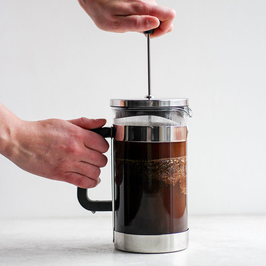

French Press Coffee

Description
This quick article will explain how to make a proper cup of coffee. No kcups and absolutely no pre-ground coffee allowed.
We will start from fresh whole beans and grind them to a consistency slighlty larger than the openings of the press filter screen.
Using a hand grinder, such as the LIDO-ET grinder, we can tune the grind setting perfectly for the french press. Why settle for less when you can have the best?
Follow this guide, and you'll be on your way to making the best coffee that you've ever had the honor of tasting.
Ingredients
- Whole Bean Coffee
- Filtered Water
- Condensed Milk
Required Tools
- French Press
- LIDO-ET Grinder
- Heat Source
Steps
- Set LIDO-ET 1 and 1/2 turns
- Grind two heaping tbsp's of coffee beans
- Bring 1 and 1/4 cup of water to boil
- Remove water from heat and let rest for 20 seconds
- Place ground coffee into french press and pour in water
- Place lid on french press and plunge down until you feel resistance
- Set a timer for 3.5 minutes
- Add one tbsp of condensed milk to your favorite cup
- Finish plunging once 3.5 minutes has passed and pour coffee into cup
- Enjoy